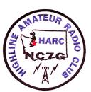

<footer>
    <div class="footer-address">
        <div class="footer-logo">
            
        </div>
        <div class="address">
            <h2 class="footer-first-line"><span class="first-line">Highline Amateur Radio Club</span>
                
            </h2>
            <p class="p-tight">PO Box 852</p>
            <p class="p-tight"> Seahurst, WA 98062</p>
        </div>
    </div>
    <div class="footer-contact-info">
        <p><a href="mailto:NC7G@highlinearc.org">NC7G@highlinearc.org</a></p>

    </div>
    <div class="footer-logo large-view">
        
    </div>
    <hr>
    <div class="footer-footer">
        <div class="footer-footer-top-row">
            <p>©<span id="year"></span> Highline Amateur Radio Club</p>
            <p><span class="vertical-bar">|</span></p>
            <p><b>Adam Ulrich - KK7UOJ</b>
        </div>
        <div class="footer-footer-bottom-row">
            <p>
                Last Updated: <span id="timestamp"></span>
            </p>
        </div>
    </div>
    <div class="credit">
        <p>
            Weather Data from OpenWeatherMap.com
        </p>
        <p>
            <a href="attribution.html">Attribution Credits</a>
        </p>
    </div>
    <script>
        // set date values on footer
        date = new Date();
        document.querySelector("#year").textContent = date.getFullYear();
        document.querySelector("#timestamp").textContent= document.lastModified;

    </script>
</footer>